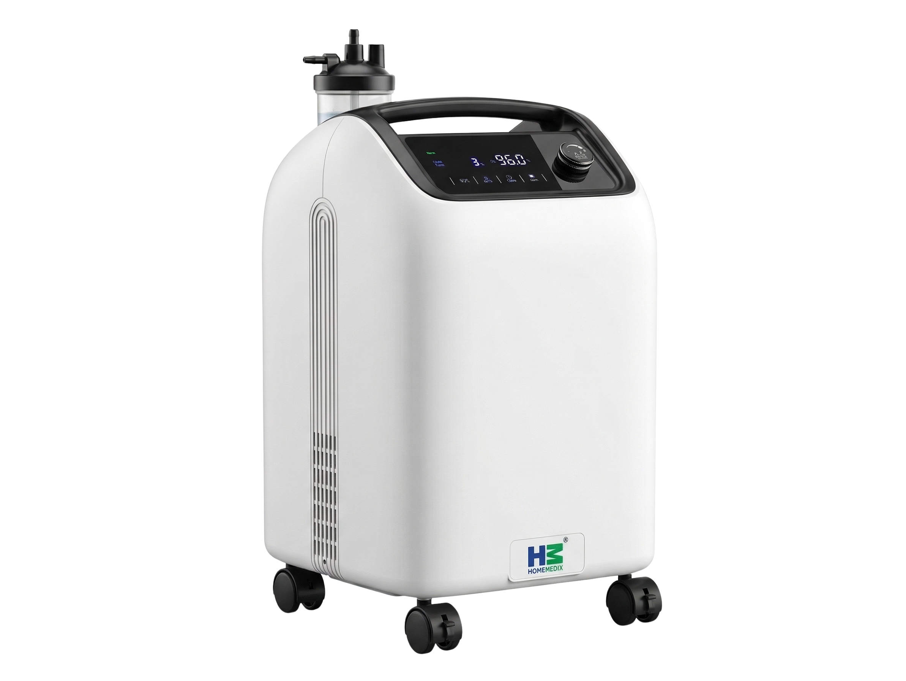

Oxygen Concentrator
KV Series
A compact, lightweight oxygen concentrator engineered for patients who need reliable home oxygen therapy with a smaller footprint and easier portability.

The KV: Home Medix's Compact Oxygen Solution
Designed for Patients Who Need Mobility
The KV series shares the same core PSA (Pressure Swing Adsorption) technology as the KX, delivering 93%+ pure oxygen continuously. Where it differs is in its compact, lighter form factor — making it easier to move between rooms, set up in tighter spaces, or transport when needed.
It's the ideal choice for patients who require supplemental oxygen but live in smaller homes, need to move the device frequently, or are setting up oxygen therapy for the first time.
- ✓Smaller footprint — fits comfortably in bedroom corners
- ✓Same 93%+ purity as the KX series
- ✓Rated for 24/7 continuous operation
- ✓Built-in carry handle and wheels for easy relocation
How It Works
The KV uses Pressure Swing Adsorption — the same proven technology used in hospital-grade oxygen systems worldwide.
Air Intake & Filtration
Room air (~78% nitrogen, ~21% oxygen) is drawn through a multi-layer filter that removes dust, pollen, and particulates — protecting the sieve beds and ensuring clean input.
PSA Nitrogen Separation
Compressed air passes through twin zeolite molecular sieve columns that trap nitrogen molecules. While one column adsorbs, the other regenerates — creating a continuous, uninterrupted cycle.
93%+ Oxygen Stored
The oxygen-enriched output (93% ± 3% purity) is collected in a product tank that maintains stable pressure, ensuring consistent flow regardless of breathing pattern or demand spikes.
Delivered to Patient
Medical-grade oxygen flows through a humidifier bottle (for comfort) and reaches the patient via nasal cannula or mask at 0.5–5 LPM, regulated by the built-in precision flow meter.
Built for India, Backed by 20 Years
Since 2004, Home Medix has delivered medical devices to Indian hospitals and homes. Manufacturing in-house since 2023.
Direct Manufacturer
Every KV unit is designed, assembled, and QC-tested at our Bengaluru facility. Genuine spare parts — zeolite sieves, filters, valves — are stocked on-site and dispatched the same day you need them.
Indian Power & Climate Ready
Wide voltage tolerance (220–240V) handles Indian grid fluctuations without a stabiliser. Engineered for 45°C ambient heat and high humidity across India — from coastal Kerala to arid Rajasthan.
Dual ISO Certified
Every KV carries both ISO 9001:2016 (quality management) and ISO 13485:2016 (medical device) certification. CDSCO registered for the Indian market.
Service by Biomedical Engineers
Our after-sales team consists of trained biomedical engineers — not generic technicians. They understand PSA systems, sieve regeneration, and oxygen purity calibration. Available across India with pan-India service coverage.
Specifications — Oxygen Concentrator KV
| Parameter | Specification |
|---|---|
| Oxygen Concentration | 93% ± 3% |
| Flow Rate | 0.5–5 LPM (adjustable) |
| Oxygen Delivery Pressure | 0.04–0.06 MPa |
| Noise Level | ≤40 dB(A) |
| Power Consumption | 320 VA |
| Working Voltage | AC 230V / 50 Hz |
| Weight | 13 kg |
| Design | Compact with carry handle & wheels |
| Continuous Use | 24 hours / day, 7 days / week |
| Alarms | Low oxygen concentration, power failure, high temperature |
| Warranty | 3 years or 10,000 hours of operation, whichever comes first |
| Certification | ISO 9001:2016 | ISO 13485:2016 | CDSCO Licensed |
Package Contents
Resources & Guides
Frequently Asked Questions
The Home Medix KV delivers 93% ± 3% oxygen purity at all flow settings from 0.5 to 5 LPM. This is the same medical-grade purity level used in hospitals and is identical to the KX series. The purity is achieved using PSA (Pressure Swing Adsorption) technology with zeolite molecular sieve columns.
The KV operates at ≤45 dB at 1-metre distance, which is roughly equivalent to a quiet library or a soft conversation. Most patients and caregivers find they can sleep comfortably in the same room. Placing the unit on a rubber mat and ensuring at least 30 cm of ventilation clearance on all sides helps reduce perceived noise further.
Yes. The KV is engineered and rated for continuous 24-hour, 7-day-a-week operation with no mandatory cool-down periods. The only routine maintenance required is monthly cleaning of the air intake filter, which takes about 2 minutes. For uninterrupted use during power outages, we recommend pairing with a UPS/inverter with at least 2 hours of backup.
Both the KV and KX deliver identical oxygen purity (93% ± 3%) and flow range (1–5 LPM). The key difference is form factor: the KV is the compact, lightweight variant with a smaller footprint, built-in carry handle, and wheels for easy relocation. It is ideal for smaller rooms, patients who move the unit frequently, or first-time oxygen therapy users. The KX is the standard home model with slightly higher build robustness, better suited for permanent placement.
The KV comes with a 3-year warranty (or 10,000 hours of operation, whichever comes first) covering manufacturing defects, with free repair or replacement. The device is ISO 9001:2016 and ISO 13485:2016 certified. Warranty service is provided by Home Medix's dedicated team of biomedical engineers, with genuine spare parts available immediately from our Bengaluru facility.
Order the Oxygen Concentrator KV
Compact, reliable oxygen therapy for home and clinical use. Pan-India delivery available.